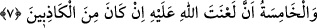
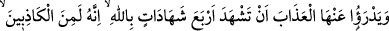
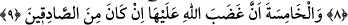
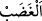

7. Beşinci defa da, eğer yalan söyleyenlerden ise Allah’ın lânetinin kendi üzerine
olmasını dilemesidir.
“Beşinci defa da,” yâni önce geçen dört şâhidliğin beşincisi olarak da “eğer” eşine
zinâ isnâd etmesinde “yalan söyleyenlerden ise Allah’ın lânetinin kendi üzerine
olmasını dilemesidir.”
Lânet, öfke ve kızgınlıkla kovmak ve uzaklaştırmak demektir. Allah’ın lâneti âhirette
cezâ vermek, dünyada ise feyzini ve tevfîkini kabulden mahrûm etmek demektir. İnsanın
lâneti ise başkasına bedduâ etmesidir. Bazıları demiştir ki: “Kâfirlere edilen lânet
kıyâmet gününe kadar devamlı ve kesintisizdir. Müslümanın lânete uğraması ise
hayırdan uzak kalması demektir. Günah işleyen kimse, o vakitte hayırdan uzaktır.
Günahtan hayra çıkınca hayır ile meşgul olmuş olur.
Bir erkek mülâanede bulunduğu zaman eşi suçunu îtiraf edip recmedilene veya o da
mülâanede bulunana kadar hapsedilir.
8-9. Kadının, kocasının yalan söyleyenlerden olduğuna dâir dört defa Allah adına
yemin ve şâhidlik etmesi, beşinci defa da, eğer (kocası) doğru söyleyenlerden ise
Allah’ın gazabının kendi üzerine olmasını dilemesi ondan cezâyı kaldırır.
“Kadının, kocasının” kendisine zinâ isnâdında “yalan söyleyenlerden olduğuna dâir
dört defa Allah adına yemin ve şâhidlik etmesi, beşinci defa da, eğer” kocası
kendisine zinâ isnâdında “doğru söyleyenlerden ise Allah’ın gazabının kendi üzerine
olmasını dilemesi ondan cezâyı kaldırır.” Yâni kendisine zinâ isnâdında bulunulan
kadından hapsolunmak veya recmedilmek şeklindeki dünyevî azâbı kaldırır. Bir hadiste
haddi düşürmek üzere bir çarenin araştırılması gerektiğine dikkat çekilerek: “Şüpheler
olduğunda hadleri düşürün”[119] buyrulmuştur.
__WORD__ (öfke), intikam arzusuyla kalpteki kanın köpürüp coşmasıdır. Bu sebeple
Rasûlullah (s.a.): “Gazabdan sakının. Çünkü o Âdem oğlunun kalbinde tutuşan bir
ateş parçasıdır. Gazablanan kimsenin gözlerinin kızarıp boyun damarlarının nasıl
kabardığını görmediniz mi?”[120] buyurmuştur. Allah Teâlâ gazab ile vasfedildiği
zaman ondan sadece intikam mânâsı anlaşılır.
‘Gazab’ın kadın tarafına tahsis edilmesi, ona ağır yemin ettirmek içindir. Çünkü
günahın işlenmesinde temel etken odur. Ayrıca kadınlar lâneti çokça kullanır. Hatta
zaman zaman akıllarına düşer düşmez “lânet olsun” deyiverirler. Fakat Allah Teâlâ’nın